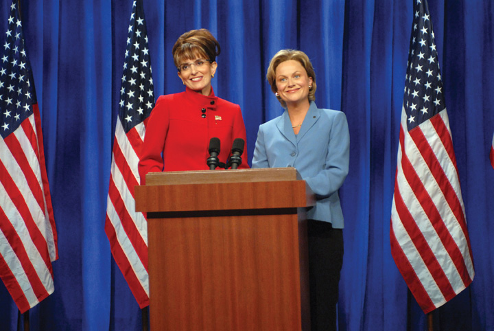

After reading this section, you should be able to answer the following questions:
The year 2008 marked the first time since 1952 that no incumbent president or incumbent vice president was a candidate in the presidential election. Media speculation about the possible Democratic and Republican nominees started earlier than ever before. The field of candidates seeking the nomination for both parties was large. Senator John McCain became the Republican nominee, and Senator Barack Obama clinched the Democratic nomination. The 2008 election witnessed unprecedented use of social media, such as Facebook, and video-sharing media, like YouTube, by candidates, journalists, and voters.
Eleven men competed for the Republican nomination. The leading candidates were former Massachusetts governor Mitt Romney, former New York mayor Rudolph Giuliani, former Arkansas governor Mike Huckabee, and Senator John McCain of Arizona. McCain had been written off by pundits the previous summer when his campaign was in disarray and out of money. He placed fourth in the Iowa caucuses but continued to campaign, winning the New Hampshire and South Carolina primaries. Both Giuliani and Romney withdrew after disappointing primary performances, leaving Huckabee to run against McCain. The Arizona senator swept the four primaries on March 5, giving him a majority of the total number of delegates for the nomination.
Senator McCain surprised pundits and politicians by choosing little-known Alaska governor Sarah Palin as his vice presidential candidate. During the primaries, the senator had been attacked by conservative talk-radio host Rush Limbaugh and other right-wing commentators as being too liberal. Putting Palin on the ticket aimed to placate conservatives and appeal to women.
Eight men and one woman competed for the Democratic nomination. Bias against women seeking elective office by party elites, fund-raisers, the media, and voters has greatly diminished, but obstacles remain for women aspiring to be president. Women face gender stereotyping that calls into question their ability to lead the country, and they must overcome the fact that the president has always been male.Lori Cox Han and Caroline Heldman, eds., Rethinking Madam President: Are We Ready for a Woman in the White House? (Boulder, CO: Lynne Rienner Publishes, 2007); also Jennifer Lawless and Richard L. Fox, It Takes a Candidate: Why Women Don’t Run for Office (New York: Cambridge University Press, 2005). Hillary Clinton sought to overcome these odds. She had name recognition and fund-raising prowess from her eight years as First Lady and her election as senator from New York. Her most formidable challenger was Barack Obama, a first-term senator from Illinois and an African American (more accurately, he is of mixed race, from a Kenyan father and white American mother). The Democratic primary was a landmark contest between the first female candidate and first African American candidate to make a serious bid for the presidency.
The campaign for the Democratic nomination was hotly contested. Hillary Clinton’s campaign made several strategic mistakes and lacked a coherent message. Obama ran the more effective campaign and was able to make his call for “change” resonate with voters. Both campaigns had sophisticated websites that not only included the usual biographical and issue information but also featured videos, ads, and interactive features that allowed users to participate in the campaign by donating, volunteering, posting messages and videos, and recruiting supporters. The Obama campaign also made extensive use of microtargeting, designing specialized messages delivered through e-mail and podcastsDigital audio or video pieces distributed by political campaigns, parties, and interest groups about a candidate, issue, or event that can be accessed conveniently on a computer or handheld digital device. that appealed to particular voters, such as young professionals who frequent Starbucks and use Blackberries to communicate.
Clinton lost to Obama in the first contest, the Iowa caucus. She recovered by winning the New Hampshire primary. On Super TuesdayA Tuesday, usually in February or March, when a large number of states hold their presidential primary elections., a date when a large number of states hold their primaries, Clinton won nine of twenty-two primaries, including California, New York, and New Jersey. Obama won the other thirteen and subsequently went on to take twelve straight caucus and primary states. Clinton won primaries in Texas, Ohio, and Pennsylvania, while Obama gained North Carolina and Indiana and picked up most of the delegates in the remaining caucus states. Clinton stayed in the race until June 7, 2008, when she withdrew and endorsed him. With 2,118 delegates needed to win the nomination, she had 1,923, and he had 2,154. Obama also had the support of 463 of the nonelected super delegates compared to 257 who backed Clinton. As his running mate, Obama chose longtime Delaware senator Joseph Biden, who possessed the Washington and foreign-policy experience he lacked.
Media images of the candidates varied widely. On the one hand, Barack Obama was portrayed positively as an American success story. Abandoned by his father when he was two, he was raised by a single mother who struggled financially, he worked his way through law school, and he was elected to the United States Senate. Alternately, he was depicted as a black man with a strange name and as an elitist with a Harvard law degree and radical ideas. Depictions of John McCain also were greatly at odds. McCain was shown to be an experienced leader, wise in the ways of national security, and as a maverick not wedded to Republican orthodoxy. On the other hand, he was portrayed as a tired, old Washington politician and as a conventional conservative averse to change.
The Democrats were able to capitalize on campaign issues that worked against the Republicans, the party of the incumbent president, George W. Bush, whose popularity was low. The fading economy took precedence over terrorism. The Iraq war was increasingly seen as a mistake to be ended. Obama denounced the Bush administration and attacked his opponent, stating, “I am not going to be Bush but McCain will.” He promised to respond to the problems of energy, education, and health care. He stated that taxes would be raised, but only for the wealthy.
One of the hallmarks of the Obama campaign was its superior use of new media. His website was more sophisticated that McCain’s, despite the fact that McCain was one of the first candidates to use the Internet for fundraising when he had previously sought the Republican presidential nomination in 2000. His website included “My Neighborhood” profiles of voters in the same zip code; “Take Action Now” e-mail alerts; and “National Voter Protection Center,” a space for reporting voting irregularities.Matthew R. Kerbel, Netroots (Boulder, CO: Paradigm Press, 2009). The Obama campaign had its own media channel, where viewers could tune in to campaign events. The campaign used digital tools to develop an e-mail list and collect millions of cell phone numbers of potential voters. The campaign also harvested cell phone numbers of millions of potential voters.
Obama opted out of the public financing system and raised nearly $750 million. McCain took public financing and received $84 million to spend from his party convention to Election Day. Obama outspent McCain in battleground states by more than four to one. Obama had funds to air a half-hour prime-time “infomercial” on network and cable television just before the election.
During the campaign, uncertainty about Sarah Palin’s qualifications for the vice presidency were raised. Her performance in the vice presidential debate showed weaknesses in her command of foreign-policy issues. In addition, the news media reported that the Republican National Committee had spent $150,000 at upscale department stores for her campaign wardrobe. Palin was further undermined by Tina Fey’s imitations of her on “Saturday Night Live,” which became popular online videos that were downloaded millions of times.
Figure 11.13 Tina Fey as Sarah Palin
Comedian Tina Fey’s parody of Republican vice presidential candidate Sarah Palin was the subject of much media discussion. Almost 25 percent of voters attributed to Palin statements that Fey had fabricated, including, “I can see Russia from my house.”
Source: Used with permission from Dana Edelson/NBC/NBCU Photo Bank via AP Images.
Governor Palin Cold Open
The real Sarah Palin appeared on “Saturday Night Live” alongside Tina Fey, who parodied her throughout the campaign.
Watch the opening skit at http://www.nbc.com/saturday-night-live/video/gov-palin- cold-open/773761.
About 62 percent of the public turned out to vote in the 2008 presidential election. Barack Obama obtained 53 percent of the popular vote and 365 Electoral College votes, including 112 from nine states that had gone for Bush in 2004. John McCain received 46 percent of the popular vote and 173 electoral votes.
2008 Presidential Election and Exit Poll Results
The results of the 2008 general election are available at http://www.cnn.com/ELECTION/2008/results/president.
Senator Barack Obama was the first African American elected to the position of US president. He faced a strong challenge for the Democratic nomination from Senator Hillary Rodham Clinton and won the general election against Republican senator John McCain. Social media were used to inform and mobilize voters in the election.